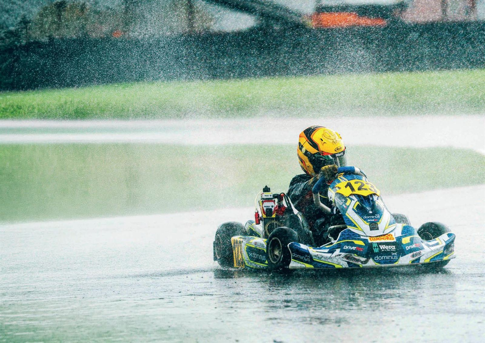
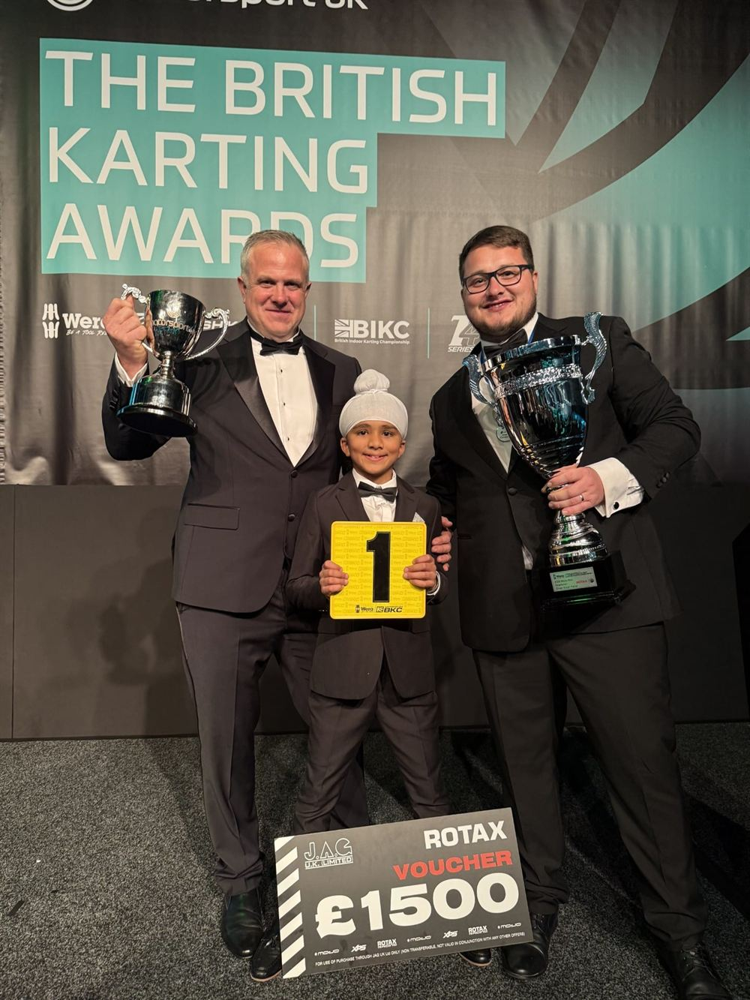

Dhian Singh Pahal · #125 · Coventry · United Kingdom
Built in the motor city.
2025 Wera Tools British MicroMax Champion. The first Sikh driver to win a British national karting championship — and Team GB at the Rotax Grand Finals. He's just getting started.
Scroll — the story so far

01 — The Driver
Composure wins championships.
Most drivers his age are finding their feet. Dhian Singh Pahal spent 2025 taking a national title from the best young drivers in Britain — on the last lap of the last race of the season.
Then he put on Great Britain's colours at the Rotax Grand Finals in Bahrain and came home with the paddock watching. The racing world noticed. The question now isn't whether he goes further. It's who goes with him.
Pace
The margin
Fifteen points behind entering the 2025 finale. He left it as British Champion — by one point.
Heritage
The first
A proud Sikh Punjabi from Coventry, racing with the Khanda on his helmet — now the first Sikh to win a British national karting championship.
Plan
The road
A pathway to Formula 4 by 2030, mapped season by season and backed by a professional team.
02 — The 2025 Finale
Fifteen points back. One lap left.
The Wera Tools British MicroMax title went to the wire at PFI, Grantham. Dhian arrived 15 points behind the championship leader — then lost Saturday's final to a technical disqualification.
On Sunday he won everything he entered. The championship was decided on the last lap of the last race of the season.
"It's been the hardest weekend of my life. I'm going to need all of the strength I can get." Dhian — before the final · Coventry Observer, Nov 2025

1
Point title margin
15
Points recovered
2
Sunday heat wins
P1
On the final lap
03 — The Pathway
2026 to 2030. Every step is on the board.
04 — In the Press
The word is travelling.
BBC national news, BBC radio features, the Coventry Observer and a headline-grabbing collaboration with Coventry City FC — Dhian's story has been writing its own coverage since 2023.
"Young drivers say high costs are affecting diversity"
Newsbeat — national feature BBC RadioSeries"Young Sikh dreams of becoming an F1 driver"
Desi Stories — BBC Sounds Coventry Observer14 Nov 2025"Coventry driver makes history after winning British karting title"
Motorsport Coventry Observer7 Aug 2026"Karting champion becomes first recipient of Coventry City's 2026/27 away kit"
Motorsport05 — Partners
Brands that saw it early.
Title · Silver · Bronze · Team — 2026/27 programme, a limited number of tier slots remain
Partnership — 2026/27
Put your brand on the road to F1.
From single-event activation to title partnership, the next chapters of this story are being written now. Write yours into it.